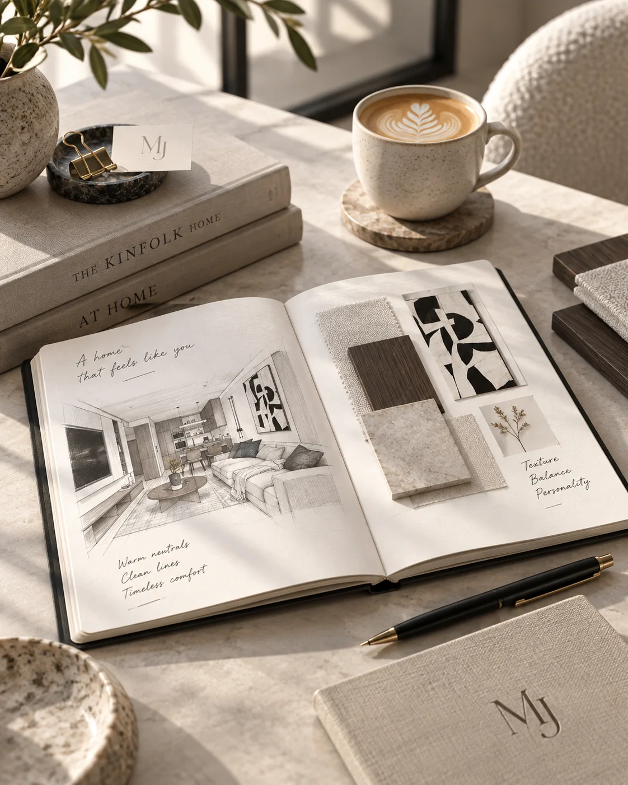
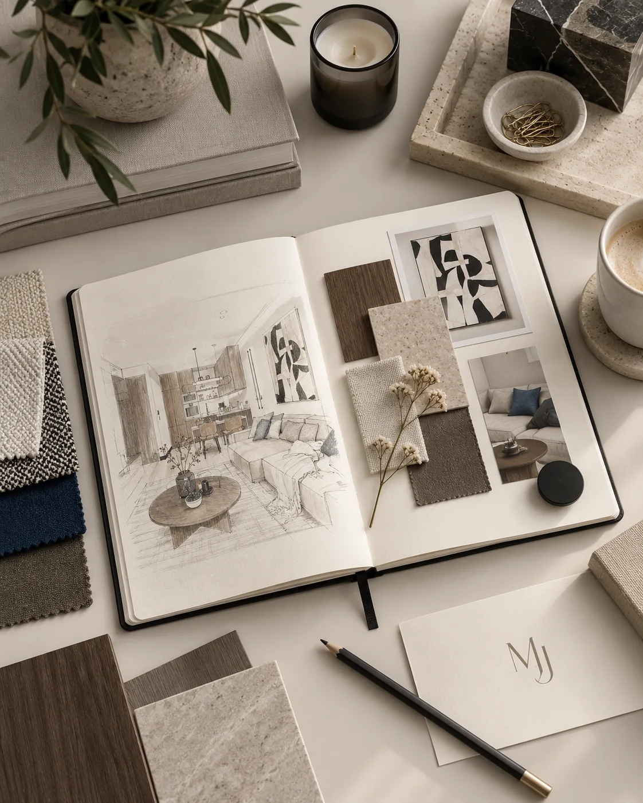
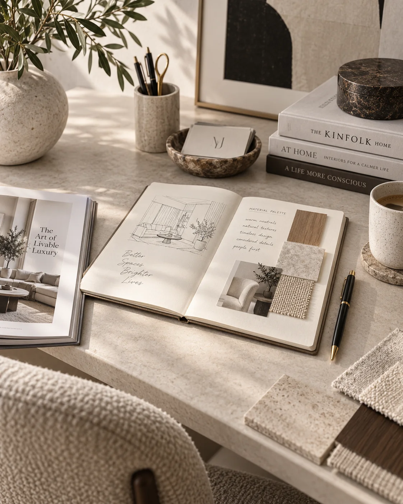
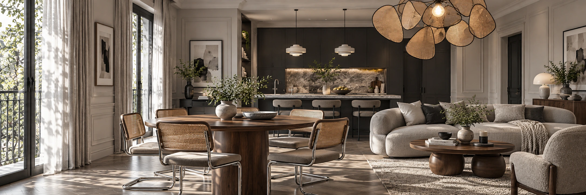

01 / Współpraca · proces
Jak dobrze zacząć projekt wnętrza?
Co przygotować przed pierwszą rozmową i które decyzje pomagają uporządkować początek projektu.
Czytaj artykuł ↗DO PRZECZYTANIA
Każdy tekst zaczyna się jak osobna notatka, a dalej otwiera w formie książki.
To miejsce na wiedzę, która pomaga uporządkować proces jeszcze przed pierwszym spotkaniem z projektantem.

01 / Współpraca · proces
Co przygotować przed pierwszą rozmową i które decyzje pomagają uporządkować początek projektu.
Czytaj artykuł ↗
02 / Funkcja · planowanie
Dlaczego układ wnętrza powinien powstać wcześniej niż lista mebli, kolorów i dodatków.
Czytaj artykuł ↗
03 / Materiały · estetyka
Jak budować spokojną bazę wnętrza i gdzie postawić na jakość zamiast chwilowego trendu.
Czytaj artykuł ↗
CHWILA NA INSPIRACJĘ
Przestrzeń na dobre pomysły.